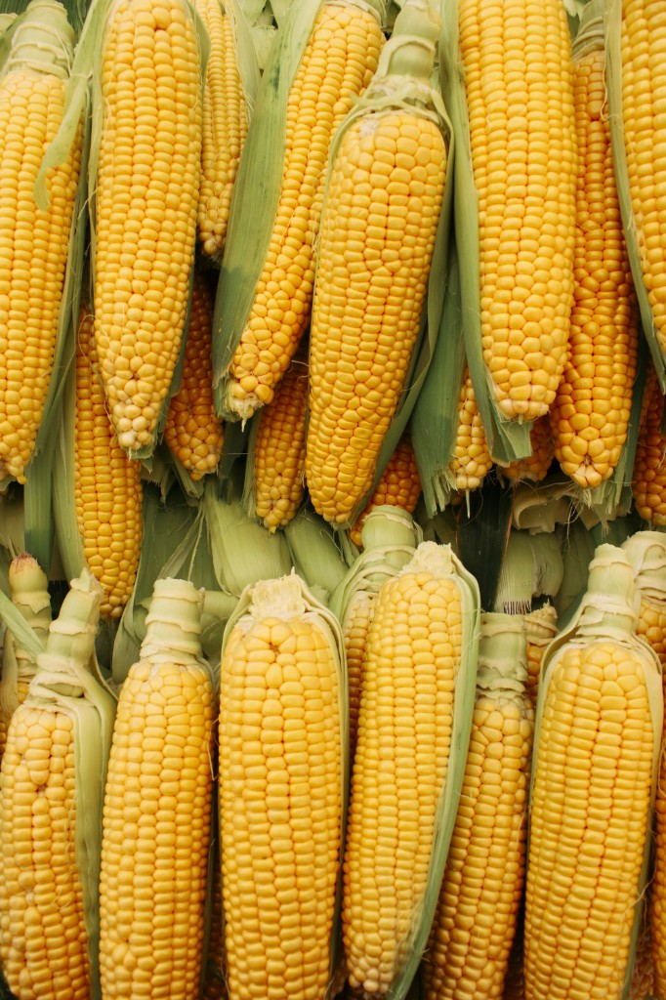
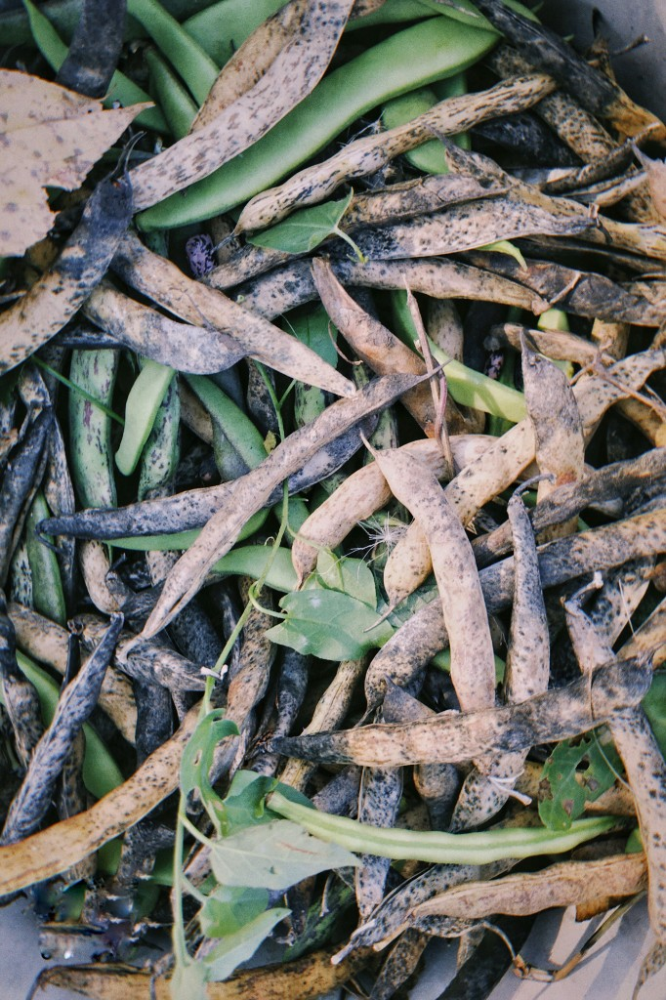
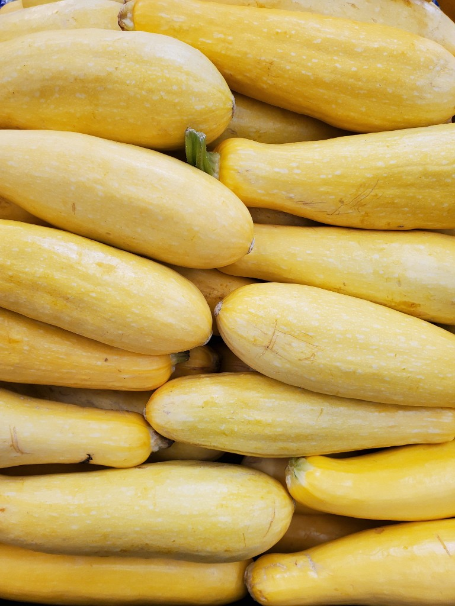
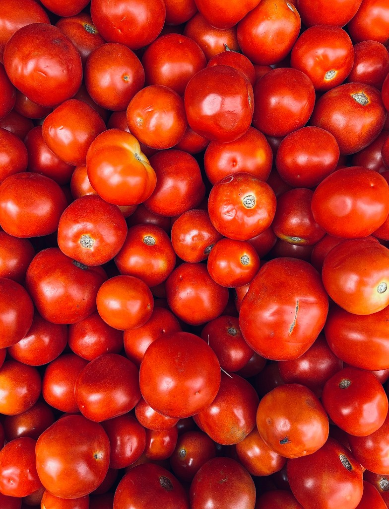

Mesoamerican staples that reshaped global food—and culture—after contact with the Old World. Select a crop to open its research dossier.

The cornerstone of Mesoamerican agriculture.

Paired with corn for complete nutrition.

The third crop of the Three Sisters.

A New World fruit that transformed world cuisine.